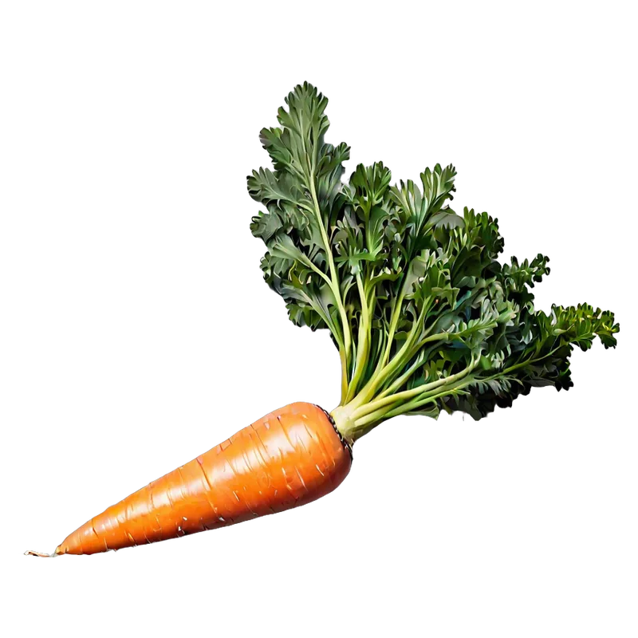
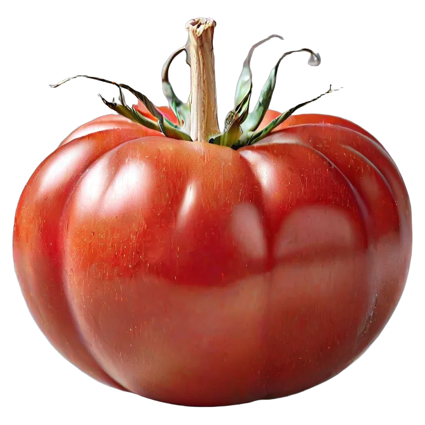
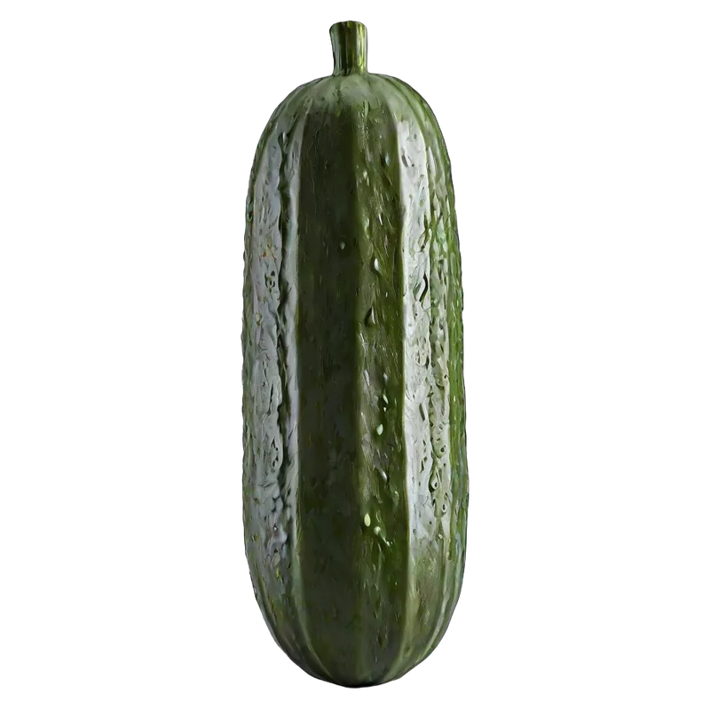
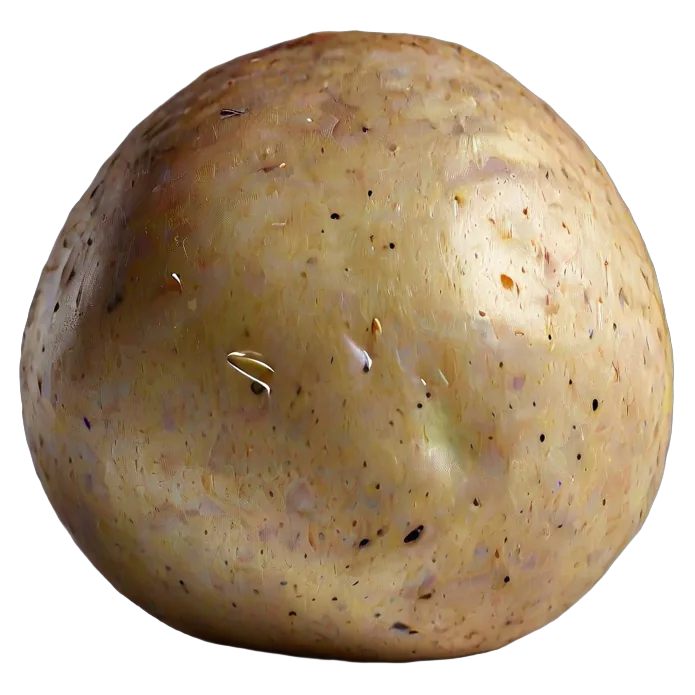
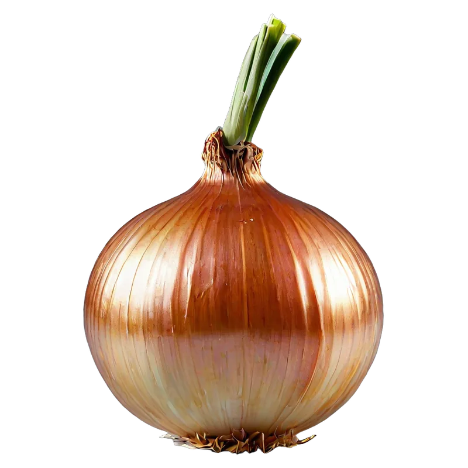
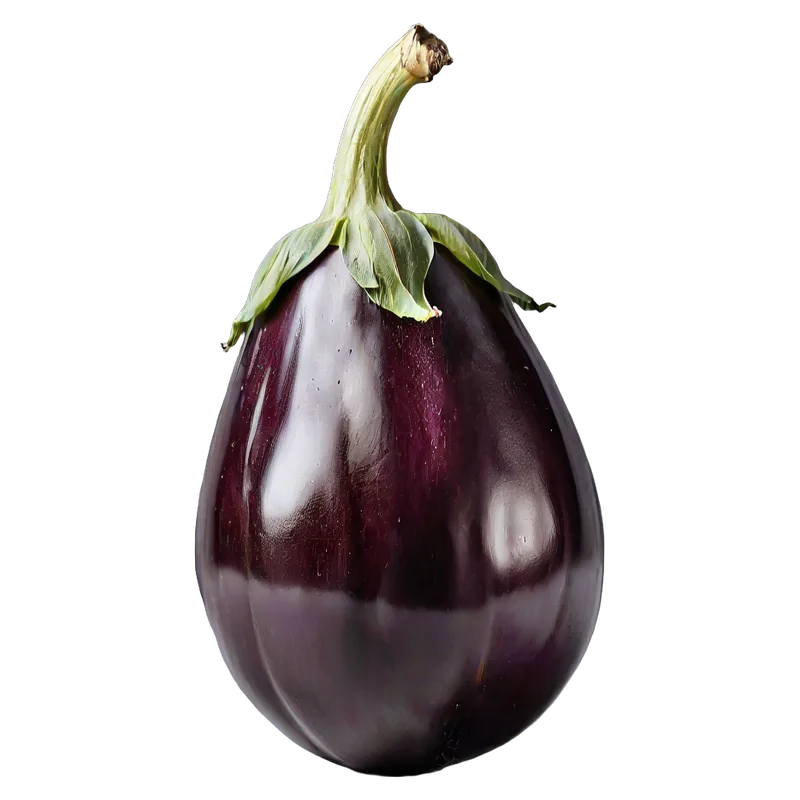
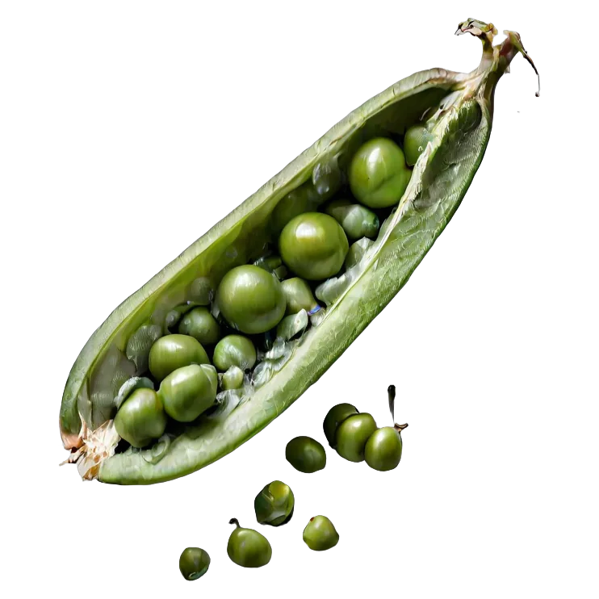

جَزَرَة
كِتَابِي الْأَوَّل
الْخُضْرَوَات

مَكْتَبَتِي الْأُولَى
09-vegetables · page 1 · front cover
هَذَا الْكِتَابُ لِـ:
09-vegetables · page 2 · inside front cover
جَزَرَة

09-vegetables · page 3 · item 01
طَمَاطِم

09-vegetables · page 4 · item 02
خِيَار

09-vegetables · page 5 · item 03
بَطَاطِس

09-vegetables · page 6 · item 04
بَصَلَة

09-vegetables · page 7 · item 05
فِلْفِل
09-vegetables · page 8 · item 06
بَاذِنْجَان

09-vegetables · page 9 · item 07
بُرُوكُلِي
09-vegetables · page 10 · item 08
ذُرَة

09-vegetables · page 11 · item 09
بَازِلَّاء

09-vegetables · page 12 · item 10
كُلُّهَا مَعًا!
طَمَاطِم
خِيَار
بَطَاطِس
بَصَلَة
فِلْفِل
بَاذِنْجَان
بَازِلَّاء
09-vegetables · page 13 · recap
أَيْنَ الْجَزَرَةُ؟
09-vegetables · page 14 · question
مَكْتَبَتِي الْأُولَى
الْحُرُوف
الْأَرْقَام
الْأَشْكَال
الْأَلْوَان
الْحَيَوَانَاتُ الْبَرِّيَّة
حَيَوَانَاتُ الْمَزْرَعَةِ وَالْبَيْت
الطُّيُور
الْفَوَاكِه
الْخُضْرَوَات
الْمُوَاصَلَات
09-vegetables · page 15 · inside back cover
مَكْتَبَتِي الْأُولَى
يتعرّف طفلك على عشرة أنواع من الخضروات بصور حقيقية واضحة.
من عمر سنة إلى ٣ سنوات
ISBN / BARCODEprinter places it here
09-vegetables · page 16 · back cover